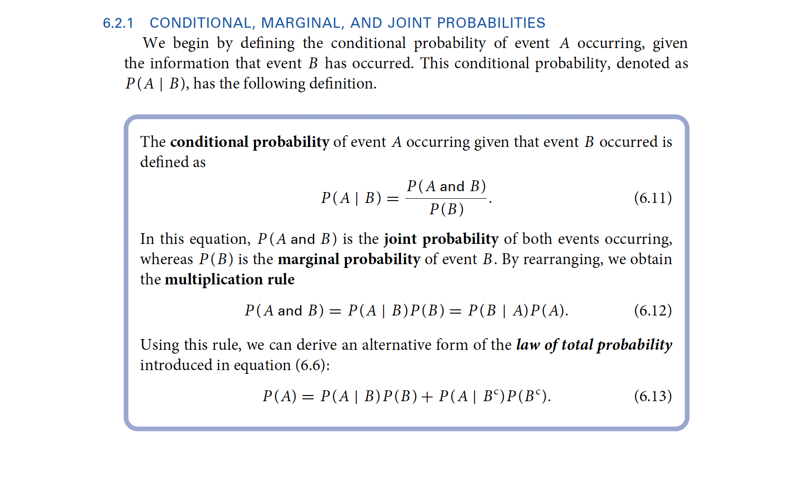
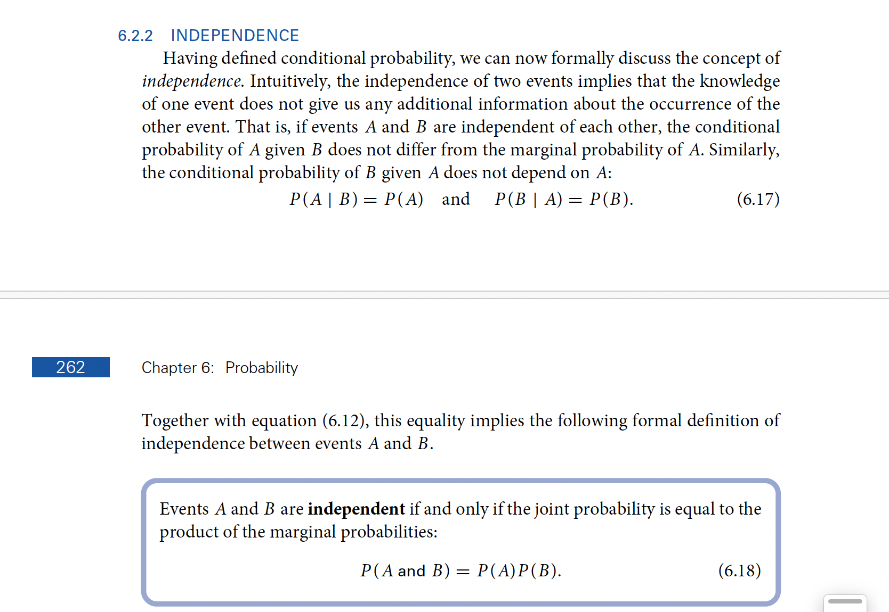

Hi everyone, this week we’ll practice making sense of contingency tables with conditional, joint, and marginal probabilities. You might also want to complement Steve’s materials with other resources.
For example, this is how Imai and Williams (2022) define these concepts:

And:

We will also practice the four ways of making sense of dependence:
Compare these probabilities using the following summary statistics:
Difference in Probabilities
Relative Risk Ratio
Odds Ratio
Log Odds Ratio
7.2.2 Exercise
Last week, in class, we used the infer package to draw a “simulation-based bootstrap distribution” for the difference in proportions between \(\Pr(W \mid C)\) and \(\Pr(W \mid C^\complement)\).
Now we mix things up a little bit.
Draw a sampling distribution for the “relative risk ratio” (Hint: infer calls this “ratio of props”)
Draw a sampling distribution for the “odds ratio”
7.2.3 Exercise
Repeat exercise 7.2.1 using the contingency table you created in exercise 7.1.2
7.2.4 Exercise
Repeat exercise 7.2.2 using the contingency table you created in exercise 7.1.2
Imai, Kosuke, and Nora Webb Williams. 2022. Quantitative Social Science: An Introduction in Tidyverse. Princeton University Press.
Source Code
---title: "Week 7"callout-appearance: simplecallout-icon: falsecode-fold: true---Hi everyone, this week we'll practice making sense of contingency tables with conditional, joint, and marginal probabilities. You might also want to complement Steve's materials with other resources.For example, this is how @imai2022 define these concepts:{fig-align="center" width="100%"}And:{fig-align="center" width="100%"}We will also practice the four ways of making sense of dependence:1. Difference in Probabilities2. Relative Risk Ratio3. Odds Ratio4. Log Odds RatioYou can download Steve's slides by clicking [**here**](https://github.com/vaiseys/soc-stats-1/raw/main/old_slides/measures-of-2x2-dependence.pptx)**.**## Contingency Tables### ExerciseLoad the GSS data for 2018, just like we did last week.```{r}#| message: falselibrary(tidyverse)library(gssr)gss18 <-gss_get_yr(2018) d <- gss18 |>select(attend, polviews) |> haven::zap_missing() |> haven::zap_labels() |>mutate(weekly =if_else(attend >=7, 1L, 0L),conservative =if_else(polviews >=5, 1L, 0L)) |>drop_na() ```Now take a look a this table:```{r}table(conservative = d$conservative, weekly = d$weekly)```::: callout-note**In this sample:**1. What is the probability that a person attends religious services weekly? I'm asking for $\Pr(W)$2. What is the probability that a person *does not* attend religious services weekly? I'm asking for $\Pr(W^\complement)$3. What is the probability that a person is conservative, given that they attend religious services weekly? I'm asking for $\Pr(C \mid W)$4. $\Pr(W \mid C)$5. $\Pr(C \mid W^\complement)$6. $\Pr(W \text{ and } C)$7. $\Pr(W^\complement \text{ and } C^\complement)$Finally, if we *assume* that $W$ and $C$ are independent:8. What *would* be the joint probability of $W$ and $C$ ?:::::: callout-tipHint: I introduced the superscript $\complement$ notation, which means "complement."You can think of $C$ as "conservative" and $C^\complement$ as "not conservative.":::### Exercise::: callout-noteChoose 2 new variables in the GSS.- Show the contingency table for these new variables.- Modify the exercise 7.1.1 so that it applies to your new contingency table and answer all 8 questions.:::::: callout-tipSuggestion: You should really make your life easier and either choose two binary variables or create them.:::## Four Ways to Make Sense of Dependence### Exercise::: callout-noteTake another look at the `weekly` vs `conservative` contingency table.Focus on these two probabilities:$$\begin{align}\Pr(W \mid C) &&\text{and} && \Pr(W \mid C^\complement)\end{align}$$Compare these probabilities using the following summary statistics:1. Difference in Probabilities2. Relative Risk Ratio3. Odds Ratio4. Log Odds Ratio:::### Exercise::: callout-noteLast week, in class, we used the `infer` package to draw a "simulation-based bootstrap distribution" for the difference in proportions between $\Pr(W \mid C)$ and $\Pr(W \mid C^\complement)$.Now we mix things up a little bit.1. Draw a sampling distribution for the "relative risk ratio" (Hint: `infer` calls this "ratio of props")2. Draw a sampling distribution for the "odds ratio":::### Exercise::: callout-noteRepeat exercise 7.2.1 using the contingency table you created in exercise 7.1.2:::### Exercise::: callout-noteRepeat exercise 7.2.2 using the contingency table you created in exercise 7.1.2:::